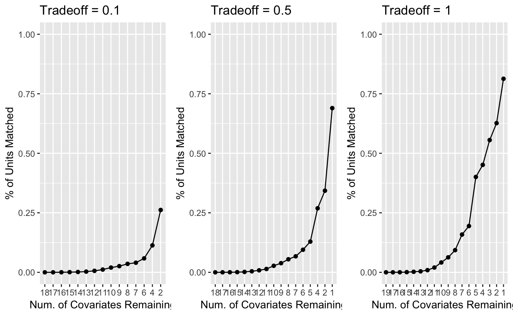
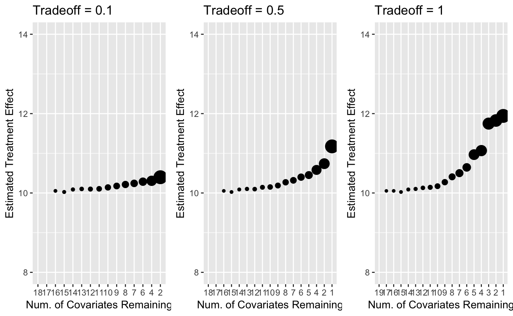
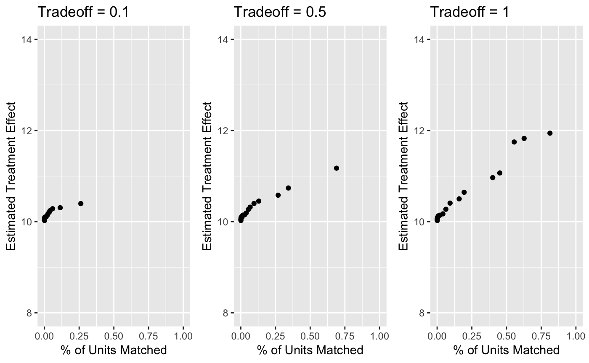

vignettes/Tradeoff.Rmd
Tradeoff.RmdWe explore how the tradeoff parameter affects matching quality. We created a simulated data with 15,000 control units and 15,000 treated units, where variables that are more important to outcome prediction are less balanced. There are 20 covariates with \(x_{i} \sim Bernoulli(0.1 + \frac{3i}{190})\) for the control group and \(x_{i} \sim Bernoulli(0.9 - \frac{3i}{190})\) for the treated group. The outcome variable is given by \(y = \sum_{i = 1}^{20} \frac{1}{i}x_{i}+10T\), where \(T \in {0, 1}\) is the treatment indicator. We expect that the algorithm would choose covariate subset that yields higher balancing factor for larger tradeoff parameter.
#> x1 x2 x3 x4 x5 x6 x7 x8 x9 x10 x11 x12 x13 x14 x15 x16 x17 x18 x19 x20
#> 1 0 1 1 1 1 0 1 1 1 1 1 0 1 1 1 1 0 1 0 1
#> 2 1 1 1 1 0 1 1 1 1 1 1 1 1 0 1 0 0 1 0 0
#> 3 1 1 1 1 1 1 1 1 1 0 1 1 0 1 0 1 1 1 0 1
#> 4 1 0 1 1 1 1 1 1 0 1 1 1 0 0 1 1 1 0 1 0
#> 5 1 0 0 1 0 1 0 1 0 0 1 1 1 0 1 0 0 0 1 1
#> 6 0 1 1 1 1 1 0 1 0 1 1 1 1 0 1 1 0 1 1 1
#> outcome treated
#> 1 12.23628 1
#> 2 13.10236 1
#> 3 13.30152 1
#> 4 12.73272 1
#> 5 11.96213 1
#> 6 12.21352 1We ran the experiment with three distinct tradeoff parameters - 0.1, 0.5, and 1.
#Connect to PostgreSQL
drv <- dbDriver('PostgreSQL')
#Name the connection as db
db <- dbConnect(drv, user="postgres", dbname="FLAME", host='localhost',
port=5432, password = 'new_password')
#Run FLAME_PostgreSQL
ridge_1 <- FLAME::FLAME_PostgreSQL(db = db, data = data, holdout = data, num_covs = 20, tradeoff = 0.1)
ridge_5 <- FLAME::FLAME_PostgreSQL(db = db, data = data, holdout = data, num_covs = 20, tradeoff = 0.5)
ridge_10 <- FLAME::FLAME_PostgreSQL(db = db, data = data, holdout = data, num_covs = 20, tradeoff = 1)
#Disconnect from db
dbDisconnect(db)We examined the percentage of units being matched as the algorithm eliminates covariates. The x-axis denotes the number of remaining covariates, and y-axis denotes the percentage of units matched (cumulative). Larger tradeoff parameter yields more matched units.

We also examined the effect of tradeoff parameter on estimated treatment effect. The x-axis denotes the number of remaining covariates, and y-axis denotes the estimated treatment effect. The bias increases as tradeoff parameter increases.
#> Warning: Removed 2 rows containing missing values (geom_point).
#> Warning: Removed 2 rows containing missing values (geom_point).
#> Warning: Removed 1 rows containing missing values (geom_point).
In summary, tradeoff parameter is the tradeoff between finding more matched units (higher balancing factor) and having lower bias (lower predictive error). In the summary plot below, the x-axis denotes the percentage of units matched, and the y-axis denotes the estimated treatment effect.
#> Warning: Removed 2 rows containing missing values (geom_point).
#> Warning: Removed 2 rows containing missing values (geom_point).
#> Warning: Removed 1 rows containing missing values (geom_point).